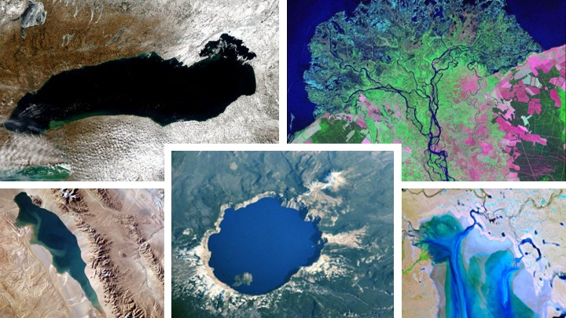

Home
LakePy

LakePy is the pythonic user-centered front-end to the Global Lake Level Database. This package can instantly deliver lake water levels for some 2000+ lakes scattered across the globe. Data comes from three sources (so far!) - United States Geological Survey National Water Information System - United States Department of Agriculture: Foriegn Agricultural Service's G-REALM Database - Theia's HydroWeb Database
Funding for this work comes from the Earth Science Information Partners (ESIP) Winter 2020 Grant
See the funded proposal here
Motivation
Lake level data is incredibly important to federal and local governments, scientists, and citizens. Until now, accessing lake level data involves laborious data-preparation and wrangling. We aim to provide this data quickly and on-demand.
Software Used
Built with - Python - Amazon Aurora Serverless - Amazon Aurora Serverless Data API
Quickstart
Installation
pip install lakepy
if you are using conda for package management you can still use pip! ### Searching the Global Lake Level Database The database can be searched using a name, a source ("grealm", "hydroweb", or "usgs"), or an identification number . The best practice for searching is to first specify a name.
Let's search for Lake Mead instantiating a Lake() object.
import lakepy as lk
my_lake = lk.search("mead")
If there is more than one Lake matching "Mead", the search function will return a RuntimeWarning and display a table.
"Search Result: 'Mead' has more than 1 Result. Showing the 2 most relevant results. Specify 'id_No' or narrow search name."
| id_No | source | lake_name | |
|---|---|---|---|
| 0 | 138 | hydroweb | Mead |
| 1 | 1556 | usgs | MEAD LAKE WEST BAY NEAR WILLARD, WI |
We will select id_No 138 corresponding to Lake Mead from HydroWeb's database and re-run our search 1 of 2 ways: - Specify the id_No explicitly as a string
my_lake = lk.search(id_No = "138")
- Specify a name and a source
my_lake = lk.search(name="mead", source="hydroweb", markdown=True)
We highly recommend specifying an id_No whenever possible to avoid issues with similarly named lakes. Either way , the search returns a metadata markdown dataframe
| id_No | source | lake_name | basin | status | country | end_date | latitude | longitude | identifier | start_date | |
|---|---|---|---|---|---|---|---|---|---|---|---|
| 0 | 138 | hydroweb | Mead | Colorado | research | USA | 2014-12-29 00:21 | 36.13 | -114.45 | L_mead | 2000-06-14 10:22 |
It is important to note that different databases will return different types and amounts of metadata. Currently latitude & longitude are only available from the USGS and HydroWeb databases, but GREALM lakes will soon have them!
### Lake() object
The "my_lake" variable is now an object of class Lake() which comes with several attributes
- name
- country
- continent (currently not supported for HydroWeb)
- source
- original_id
- id_No
- observation_period
- latitude (currently not supported for G-REALM)
- longitude (currently not supported for G-REALM)
- misc_data
- dataframe
- data
importantly, my_lake.dataframe and my_lake.data are pandas dataframe instances with associated methods
my_lake.dataframe.describe().to_markdown()
| water_level | |
|---|---|
| count | 119 |
| mean | 342.807 |
| std | 7.34547 |
| min | 330.75 |
| 25% | 337.905 |
| 50% | 342.26 |
| 75% | 347.555 |
| max | 365.43 |
Plotting
LakePy allows for native time series plotting as well as map-view plots
my_lake.plot_timeseries()
Plotly (default)
Seaborn/Matplotlib
my_lake.plot_timeseries(how='seaborn')
my_lake.plot_mapview()

Contributing
We would love your help in making this project better. Please refer to our contribution guide to learn how.
Credits
This work is based on funding provided by the ESIP Lab with support from the National Aeronautics and Space Administration (NASA), National Oceanic and Atmospheric Administration (NOAA) and the United States Geologic Survey (USGS).
The authors would also like to acknowledge the Dynamic Stratigraphy Group at UT Austin and the AWS Staff that helped on this project!